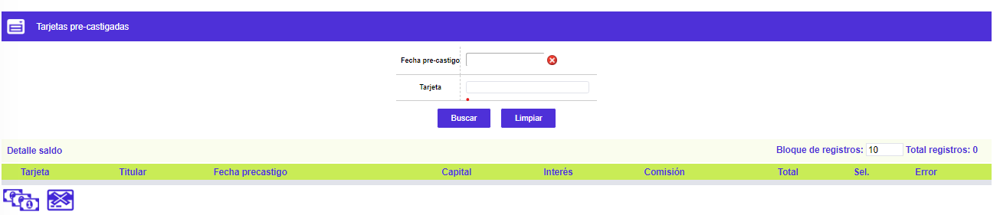
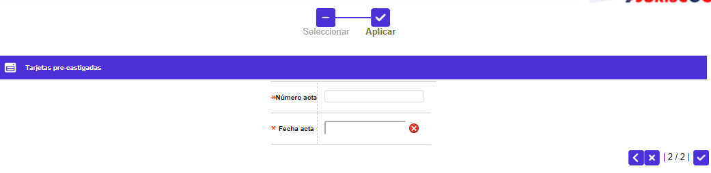
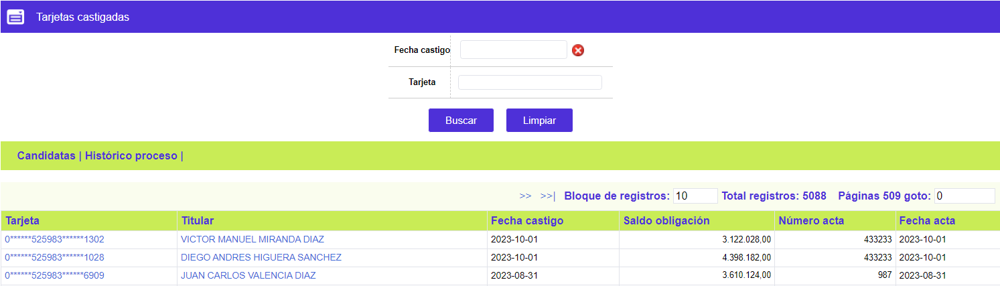

Castigo de cartera |
Precastigadas: Luego de ser seleccionados los productos y pasados al proceso de precastigo, en esta tabla se relacionan esos clientes.
Filtro: El formulario cuenta con un filtro inicial de búsqueda, necesario para la consulta de la información:
Fecha precastigo |
Permite a la entidad consultar a una fecha específica la información correspondiente a los productos que pasaron al proceso de precastigo. |
Número tarjeta |
El campo número tarjeta admite cualquier dato alfanumérico de máximo 23 caracteres. Permite mayúsculas y minúsculas |
El formulario contiene la opción Detalle saldo, y en la parte superior cuenta con un botón para volver al formulario principal de tarjetas Candidatas.

|
Número tarjeta |
Presenta los productos que han cumplido con las condiciones para entrar al proceso de precastigo. |
Titular |
Contiene el nombre del cliente principal del producto. |
Fecha precastigo |
Informa la fecha en la que cada producto pasó al proceso de precastigo. |
Capital |
Informa el valor del capital que el cliente trae vencido, el mismo que se considerará en el momento de realizar el precastigo. |
Intereses |
Despliega el valor los intereses (corrientes y moratorios) que el cliente posee como saldo, el mismo que se considerará en el momento de realizar el precastigo. |
Comisiones |
Señala el valor las comisiones que el cliente presenta como saldo, el mismo que se considerará en el momento de realizar el precastigo. |
Total |
Muestra el total de la deuda (capital mas intereses y comisiones) correspondientes al cliente candidato al precastigo. |
Seleccionar |
Esta casilla permite al usuario seleccionar todos aquellos clientes que se pasarán al proceso de precastigo. |
Error |
En este campo el sistema muestra los posibles errores presentados en el proceso de precastigo. |
Adicionalmente, el formulario cuenta con los siguientes botones:
|
Saldo acumulado: A través de este botón el sistema informa cuantas tarjetas ha seleccionado previamente el usuario y la correspondiente suma de los saldos de estas tarjetas para cada uno de los conceptos desplegados. |
|
Castigar todas las tarjetas: Cuando el usuario utilice este botón, el sistema debe desplazarse al siguiente formulario para diligenciar los datos del acta y poderlas castigar. |

Número acta |
El campo Número acta admite cualquier dato alfanumérico de máximo 15 caracteres. Reconoce mayúsculas y minúsculas |
Fecha acta |
El campo Fecha acta admite cualquier dato válido de fecha según el formato establecido validando que la fecha ingresada sea menor o igual a la del sistema. |
Saldo acumulado: Luego de presionar este botón, se muestra otro formulario con la siguiente información, correspondiente a las tarjetas que hayan sido marcadas o seleccionadas:
Total de tarjetas |
Corresponde a la cantidad de tarjetas que se encuentran seleccionadas para ser castigadas. |
Total capital a castigar |
Muestra el valor correspondiente a la suma de la deuda de los clientes por concepto de capital que pasan al proceso de castigo. |
Total Intereses a castigar |
Despliega el valor correspondiente a la suma de la deuda de los clientes por concepto de intereses (corrientes y de mora) que pasan al proceso de castigo. |
Total Comisiones a castigar |
Indica el valor de las comisiones que el cliente presenta y que pasan al proceso de castigo. |
| Valor total | Campo que muestra el valor correspondiente a la suma total de la deuda de los clientes por concepto de capital más intereses y comisiones que pasan al proceso de castigo, con el fin de informar a la entidad acerca del monto total que pasará a dicho proceso. |
Detalle saldo: A través de este formulario el sistema despliega los saldos por cada una de las monedas que posea la tarjeta.

Candidatas | Castigadas | Histórico proceso | Consulta de parámetros